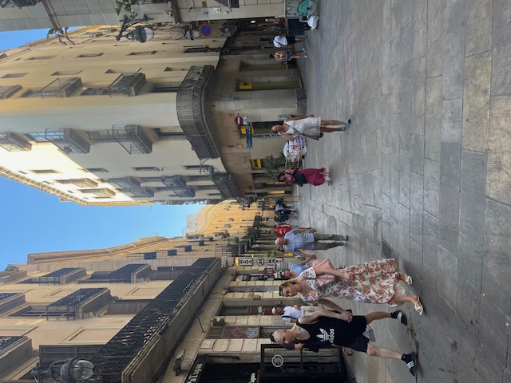
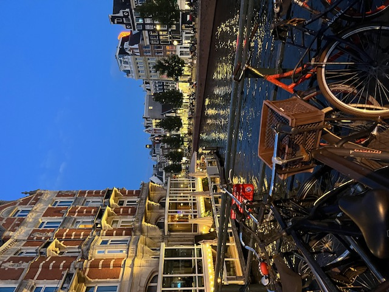

.jpeg)
.jpeg)


My name is Harry Joseph Cummins. I was born in Wales on the 24th of january, in the year 2004 in a family of four and two minituare suasage dogs. I grew up in the small town of abergaveny until the age of 6 where we moved to portishead in bristol. I started my education at ticekenham primary school, before later moving to Trinity primary. These early years of education led to me becoming a student at goradno school and later a member of the sixth form at gordano. I studied Computre science, Bussines and History but my real passion was web development which i learnt in the early stages of computing. I wanted to learn further in depth about web development so i decided to apply for bath spa universitys creative computing course on the web development pathway, where i further developed my web devlopment skills aswell as other coding languages. This leads to to be about to finish first year excited to move on to the second year content to come.
| Likes | Dislikes |
|---|---|
| Football | Spiders |
| Traveling | Pickles |
| Time with family and friends | Cold weather |
| Cooking | Being ignored |
| Coding | Flying |